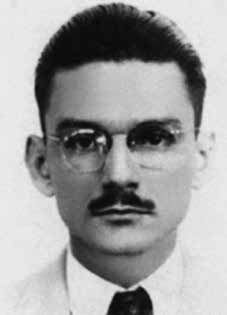

Mário
Alves
de Souza
Vieira
CIRCUNSTÂNCIAS DA MORTE
Mário Alves de Souza Vieira, um dos fundadores e secretário-geral do PCBR, foi perseguido e monitorado por órgãos de informação e repressão do Estado brasileiro em virtude de sua militância política. No dia 16 de janeiro de 1970, por volta das 20 horas, saiu de sua casa no subúrbio carioca de Abolição e nunca mais retornou. Foi sequestrado, preso ilegalmente e torturado por agentes do Estado nas dependências do Destacamento de Operações de Informações – Centro de Operações de Defesa Interna no Rio de Janeiro (DOI-CODI-RJ). As bárbaras torturas sofridas por ele foram testemunhadas por vários presos políticos, entre os quais René Carvalho, Antônio Carlos de Carvalho, e o advogado Raimundo Teixeira Mendes.
Raimundo narra alguns momentos de tortura sofridos por Mário Alves: […] que o preso [Mário Alves] não respondia às perguntas, que ouviram bater, que normalmente batiam com cassetete e “maricota”, tubo de borracha com furos; que falaram e o colocaram no “pau-de-arara” com choques elétricos, que houve um silêncio e, pela fresta, viu Mário Alves pendurado no “pau-de-arara” e como estava sem o capuz o reconheceu (…) que houve sessão de afogamento que havia ameaças de assassiná-lo caso não falasse, que poderiam sumir com ele, pois ninguém havia assistido a prisão; que pela manhã a gritaria se encerrou. Em ação movida pela família, a União foi responsabilizada pela prisão, tortura e morte, mas o corpo não foi entregue.
O martírio do dirigente comunista foi descrito na obra A Ditadura Escancarada, de Élio Gaspari, em trecho reproduzido no livro-relatório Direito à Memória e à Verdade, da CEMDP: Mário Alves ficou oito horas na Sala Roxa [onde ocorriam as torturas]. No início da manhã seguinte, o cabo da guarda chamou quatro prisioneiros para limpá-la. Num canto, havia um homem ferido. Sangrava pelo nariz e pela boca. Tinha sido empalado com um cassetete. Dois outros presos, militantes do PCBR, reconheceram-no, deram-lhe de beber e limparam-lhe o rosto. A mulher de Mário Alves, Dilma Borges Vieira, empreendeu uma peregrinação sem trégua para tentar obter alguma informação sobre o paradeiro do marido. Tornou-se uma das precursoras do movimento dos familiares de mortos e desaparecidos políticos.
No mesmo ano da morte de seu companheiro, em 1970, ela escreveu uma carta à esposa do cônsul brasileiro sequestrado no Uruguai, Aparecida Gomide, em que denunciou o assassinato de Mário Alves. Seguem alguns trechos: Todos conhecem o seu sofrimento, a sua angústia. A imprensa falada e escrita focaliza diariamente o seu drama. Mas do meu sofrimento, da minha angústia, ninguém fala. Choro sozinha. Não tenho os meus recursos para me fazer ouvir, para dizer também que “tenho o coração partido‟, que quero meu marido de volta. O seu marido está vivo, bem tratado, vai voltar. O meu foi trucidado, morto sob tortura, pelo 1º Exército, foi executado sem processo, sem julgamento. Reclamo o seu corpo. Nem a Comissão de Direitos da Pessoa Humana me atendeu. Não sei o que fizeram dele, onde o jogaram. Ele era Mário Alves de Souza Vieira, jornalista. Foi preso no dia 16 de janeiro do corrente, na Guanabara, pela polícia do 1º Exército e levado para o quartel da P.E., sendo espancado barbaramente de noite, empalado com um cassetete dentado, o corpo todo esfolado por escova de arame, por se recusar a prestar informações exigidas pelos torturadores do 1º Exército e do DOPS.
Alguns presos, levados à sala de torturas para limpar o chão sujo de sangue e de fezes, viram meu marido moribundo, sangrando pela boca e pelo nariz, nu, jogado no chão, arquejante, pedindo água, e os militares torturadores em volta, rindo, não permitindo que lhe fosse prestado nenhum socorro. Sei que a sra. não tem condições de avaliar meu sofrimento, porque a dor de cada um é sempre maior do que a dos outros. Mas espero que compreenda que as condições que levaram meu marido a ser torturado até a morte e o seu sequestrado não são as mesmas; que é importante saber que a violência-fome, violência-miséria, violência-opressão, violência-atraso, violência-terrorismo, violência-guerrilha; que é muito importante saber quem pratica a violência – os que criam a miséria ou os que lutam contra ela.
Mesmo com o reconhecimento da responsabilidade do Estado no desaparecimento e morte de Mário Alves de Souza Vieira, seu corpo nunca foi encontrado.
Mário Alves de Souza Vieira, one of the founders and general secretary of PCBR, was persecuted and monitored by information and repression bodies of the Brazilian State due to his political activism. On January 16, 1970, at around 8 pm, he left his home in the Rio suburb of Abolição and never returned. He was kidnapped, illegally arrested and tortured by State agents on the premises of the Information Operations Detachment – Internal Defense Operations Center in Rio de Janeiro (DOI-CODI-RJ). The barbaric torture he suffered was witnessed by several political prisoners, including René Carvalho, Antônio Carlos de Carvalho, and lawyer Raimundo Teixeira Mendes.
Raimundo narrates some moments of torture suffered by Mário Alves: […] that the prisoner [Mário Alves] did not answer the questions, that they heard knocking, that they usually hit with a baton and “maricota”, a rubber tube with holes in it; that they spoke and placed him in the “pau-de-arara” with electric shocks, that there was silence and, through the gap, he saw Mário Alves hanging from the “pau-de-arara” and as he was without his hood he recognized him (…) that there was a drowning session and there were threats to murder him if he did not speak, that they could disappear with him, as no one had attended the arrest; that in the morning the shouting ended. In a lawsuit filed by the family, the Union was held responsible for the arrest, torture and death, but the body was not handed over.
The martyrdom of the communist leader was described in the work A Ditadura Escancarada, by Élio Gaspari, in an excerpt reproduced in the report book Direito à Memória e à Verdade, by CEMDP: Mário Alves spent eight hours in the Purple Room [where the torture took place]. Early the next morning, the corporal of the guard called four prisoners to clean it. In the corner, there was an injured man. He was bleeding from his nose and mouth. He had been impaled with a baton. Two other prisoners, PCBR activists, recognized him, gave him a drink and cleaned his face. Mário Alves' wife, Dilma Borges Vieira, undertook a relentless pilgrimage to try to obtain some information about her husband's whereabouts. She became one of the precursors of the movement of relatives of political dead and disappeared.
In the same year as her partner's death, in 1970, she wrote a letter to the wife of the Brazilian consul kidnapped in Uruguay, Aparecida Gomide, in which she denounced the murder of Mário Alves. Here are some excerpts: Everyone knows your suffering, your anguish. The spoken and written press focuses daily on his drama. But no one talks about my suffering, my anguish. I cry alone. I don't have the resources to make myself heard, to also say that "I have a broken heart", that I want my husband back. Your husband is alive, well treated, he will come back. Mine was slaughtered, killed under torture, by the 1st Army, he was executed without process, without trial. I claim his body. Not even the Human Rights Commission responded to me. I don't know what they did to him, where they threw him. He was Mário Alves de Souza Vieira, journalist. He was arrested on January 16th of this year, in Guanabara, by the 1st Army police and taken to the P.E. barracks, being savagely beaten at night, impaled with a jagged baton, his entire body skinned with a wire brush, for refusing to provide information demanded by the 1st Army and DOPS torturers.
Some prisoners, taken to the torture room to clean the floor stained with blood and feces, saw my dying husband, bleeding from the mouth and nose, naked, thrown on the floor, panting, asking for water, and the military torturers around him, laughing, not allowing any help to be given to him. I know that Mrs. He is unable to evaluate my suffering, because each person's pain is always greater than that of others. But I hope you understand that the conditions that led to my husband being tortured to death and his kidnapping are not the same; that it is important to know that violence-hunger, violence-misery, violence-oppression, violence-delay, violence-terrorism, guerrilla violence; that it is very important to know who commits violence – those who create misery or those who fight against it.
Even with the recognition of the State's responsibility in the disappearance and death of Mário Alves de Souza Vieira, his body was never found.
Mário Alves de Souza Vieira, uno de los fundadores y secretario general del PCBR, fue perseguido y monitoreado por órganos de información y represión del Estado brasileño debido a su activismo político. El 16 de enero de 1970, alrededor de las 20 horas, abandonó su casa en el suburbio carioca de Abolição y nunca regresó. Fue secuestrado, detenido ilegalmente y torturado por agentes del Estado en las instalaciones del Destacamento de Operaciones de Información – Centro de Operaciones de Defensa Interna en Río de Janeiro (DOI-CODI-RJ). La bárbara tortura que sufrió fue presenciada por varios presos políticos, entre ellos René Carvalho, Antônio Carlos de Carvalho y el abogado Raimundo Teixeira Mendes.
Raimundo narra algunos momentos de tortura sufrida por Mário Alves: […] que el preso [Mário Alves] no respondía las preguntas, que oían golpes, que habitualmente golpeaban con una porra y una “maricota”, un tubo de goma con agujeros; que hablaron y lo metieron en el “pau-de-arara” con descargas eléctricas, que se hizo silencio y, por el hueco, vio a Mário Alves colgado del “pau-de-arara” y como estaba sin capucha lo reconoció (…) que hubo una sesión de ahogamiento y hubo amenazas de asesinarlo si no hablaba, que podían desaparecer con él, ya que nadie había asistido a la detención; que por la mañana cesaron los gritos. En una demanda interpuesta por la familia, el Sindicato fue responsabilizado por la detención, tortura y muerte, pero el cuerpo no fue entregado.
El martirio del líder comunista fue descrito en la obra A Ditadura Escancarada, de Élio Gaspari, en un extracto reproducido en el libro reportaje Direito à Memória e à Verdade, del CEMDP: Mário Alves pasó ocho horas en la Sala Púrpura [donde tuvo lugar la tortura]. Temprano a la mañana siguiente, el cabo de la guardia llamó a cuatro prisioneros para limpiarlo. En la esquina había un hombre herido. Sangraba por la nariz y la boca. Lo habían empalado con una porra. Otros dos presos, activistas de la PCBR, lo reconocieron, le dieron de beber y le limpiaron la cara. La esposa de Mário Alves, Dilma Borges Vieira, emprendió una incesante peregrinación para intentar obtener alguna información sobre el paradero de su marido. Se convirtió en una de las precursoras del movimiento de familiares de muertos y desaparecidos políticos.
El mismo año de la muerte de su pareja, en 1970, escribió una carta a la esposa del cónsul brasileño secuestrado en Uruguay, Aparecida Gomide, en la que denunciaba el asesinato de Mário Alves. He aquí algunos extractos: Todo el mundo conoce tu sufrimiento, tu angustia. La prensa hablada y escrita se centra diariamente en su drama. Pero nadie habla de mi sufrimiento, de mi angustia. Lloro solo. No tengo recursos para hacerme oír, para decir también que "tengo el corazón roto", que quiero recuperar a mi marido. Su marido está vivo, bien tratado, volverá. El mío fue masacrado, asesinado bajo tortura, por el 1.er Ejército, fue ejecutado sin proceso, sin juicio. Reclamo su cuerpo. Ni siquiera la Comisión de Derechos Humanos me respondió. No sé qué le hicieron, dónde lo tiraron. Se trataba de Mário Alves de Souza Vieira, periodista. Fue detenido el 16 de enero de este año, en Guanabara, por policías del 1º Ejército y trasladado al P.E. cuartel, siendo salvajemente golpeado por la noche, empalado con un bastón dentado, desollado todo el cuerpo con un cepillo de alambre, por negarse a proporcionar la información exigida por los torturadores del 1.er Ejército y del DOPS.
Algunos prisioneros, llevados a la sala de torturas para limpiar el suelo manchado de sangre y heces, vieron a mi marido moribundo, sangrando por la boca y la nariz, desnudo, tirado en el suelo, jadeando, pidiendo agua, y a los torturadores militares a su alrededor, riendo, sin permitir que le prestaran ninguna ayuda. Sé que la señora He es incapaz de evaluar mi sufrimiento, porque el dolor de cada uno es siempre mayor que el de los demás. Pero espero que comprendan que las condiciones que llevaron a que mi esposo fuera torturado hasta la muerte y su secuestro no son las mismas; que es importante saber que violencia-hambre, violencia-miseria, violencia-opresión, violencia-retraso, violencia-terrorismo, violencia guerrillera; que es muy importante saber quién comete violencia: quiénes crean la miseria o quiénes luchan contra ella.
Aún con el reconocimiento de la responsabilidad del Estado en la desaparición y muerte de Mário Alves de Souza Vieira, su cuerpo nunca fue encontrado.